朝の部
ときおり 6:30〜8:30 に朝の部を開けております。決まった曜日はございませんので、開ける日は前もってSNSでお知らせしております。
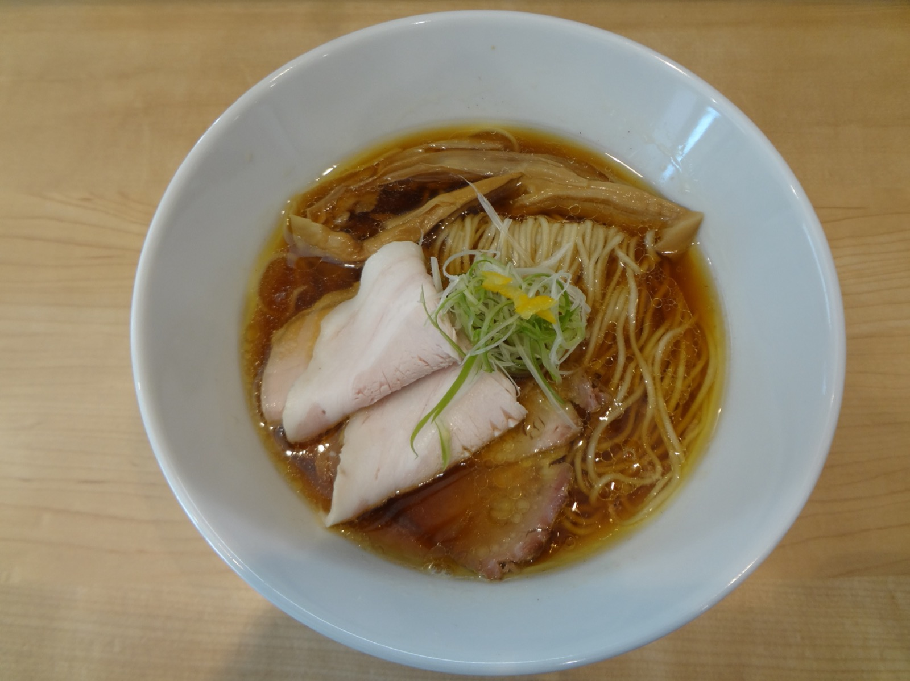
栃木県野木町・野木駅 西口すぐ
沸騰させずに炊いた鶏の出汁と、自家製の麺。
材料が無くなり次第、その日の営業を終わらせていただきます。
当日の状況と限定のお品は、InstagramとXでお知らせしております。お出かけ前にご覧ください。
OPEN
昼と夜の二部制でお待ちしております。日曜日は昼だけ通しで開けております。
材料が無くなり次第、表の時刻より早く終わらせていただくことがございます。
このほかに、不定期の「朝の部」と、第4土曜の夜おそくの部がございます。下にまとめております。
ときおり 6:30〜8:30 に朝の部を開けております。決まった曜日はございませんので、開ける日は前もってSNSでお知らせしております。
第4土曜の 21:00〜23:00、夜おそくの部を開けております。この日だけのお品をご用意しております。
月曜のほかに、日曜のお休みをいただく週がございます。その月のお休みは、月初にSNSのカレンダーでお知らせしております。
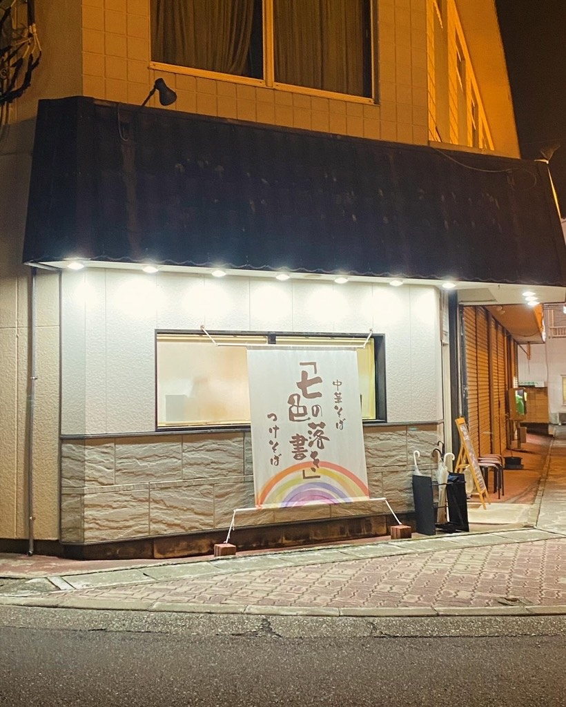
SOUP
強く沸かせば早く炊き上がりますが、そのぶんスープは濁ってまいります。当店は沸騰の手前で止めて、鶏と向き合う時間のほうをいただくことにいたしました。
沸騰
ここまで上げると、濁ります。
ここで、数時間。
鶏の骨から、澄んだまま出汁が出てまいります。丼に注いだとき、向こう側が見える濃さでお出ししております。
鶏白湯は、骨が崩れるまで。
濃厚鶏そばのスープだけは、逆に炊き込んでとろみを出しております。
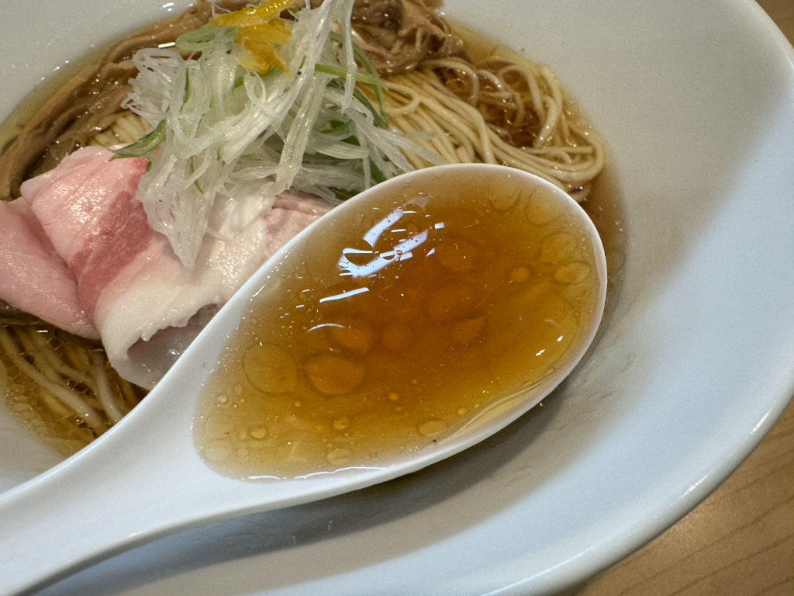
GRAFFITI
定番のほかに、その週その週で限定をこしらえております。牡蠣の潮、昆布水のつけそば、粗挽き胡椒の一杯。子どもの落書きのように自由に描きたくて、この屋号にいたしました。
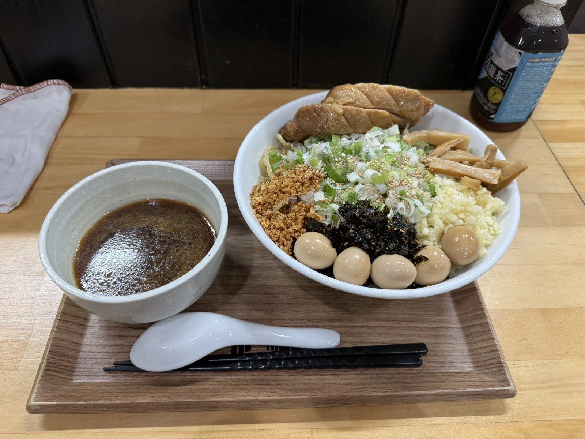
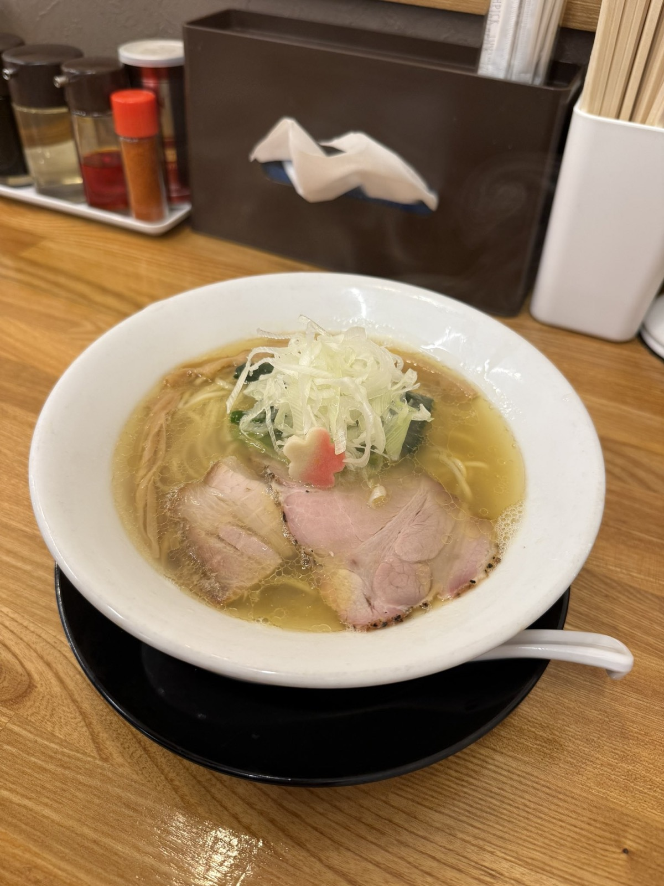
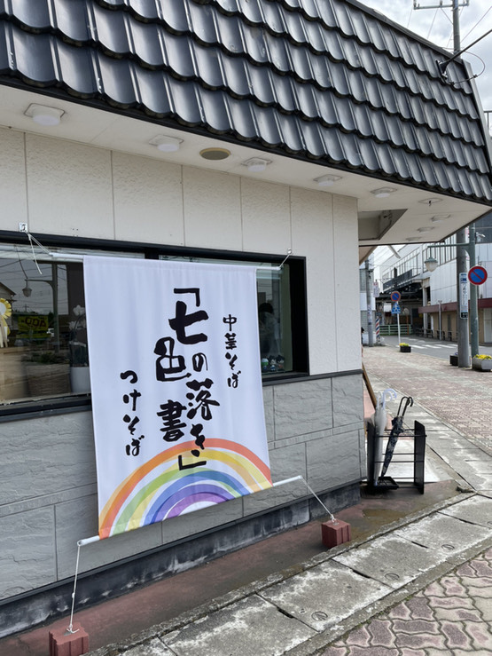
ABOUT
介護の仕事を十年あまり続けながら、休みの日に鶏を炊いておりました。栃木市のらーめん店で修業させていただいたのち、2023年の1月、生まれ育った野木町でこの店を始めました。
カウンターとテーブルを合わせて12席の、小さな店でございます。おひとりでも、お子さま連れでも、どうぞお気軽にお立ち寄りください。券売機でお食事券をお求めいただく形をとっております。
駐車場は、店の角を曲がって北へ50mほどのところに8台ぶんご用意しております。看板を出しておりますので、そちらへお停めください。
SEATS
白木のカウンターと、二人掛けのテーブルが二卓。全席禁煙でお迎えしております。おひとりでも、お子さま連れでも、どうぞお気軽にお立ち寄りください。
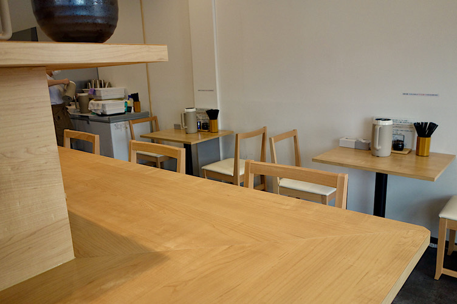
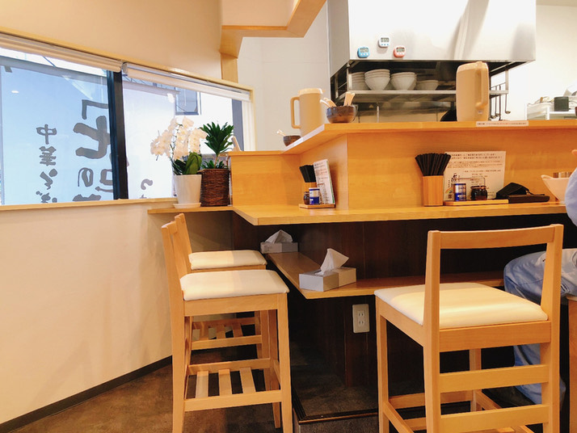
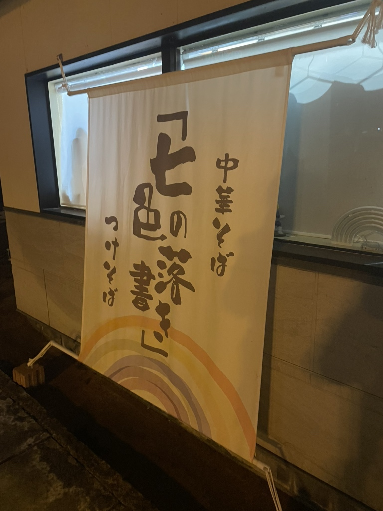
VOICE
「とてもレベルの高い一杯に妻も絶賛でした♪」
お客様の声より
「3連食目でも、美味しく食べれる冷製ベジポタ🥔創作意欲も高く、また訪れてみたいお店」
お客様の声より
「卵がすごくオレンジで濃厚で美味しかった」
お客様の声より
ACCESS
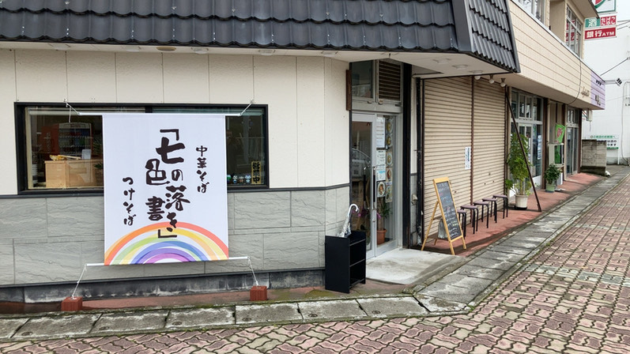
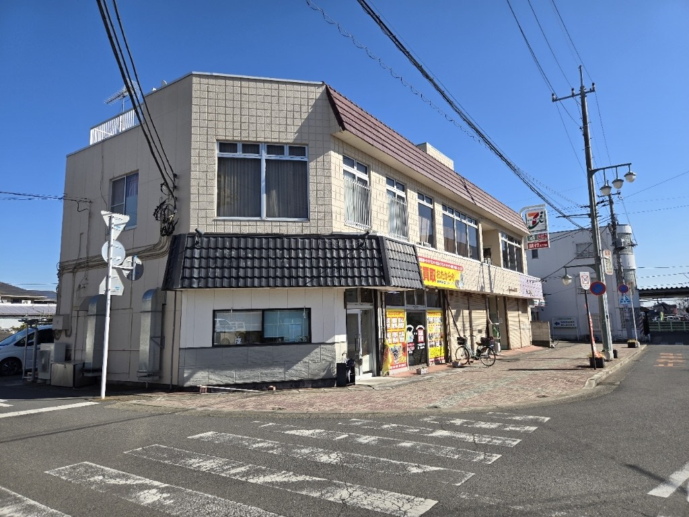
| 住所 | 〒329-0111 栃木県下都賀郡野木町丸林408-1 |
|---|---|
| アクセス | JR宇都宮線 野木駅 西口から歩いて0分 |
| 営業時間 | 火〜土 11:00〜14:00／18:00〜20:00 日曜 11:00〜15:00 材料が無くなり次第、終了いたします このほかに、不定期の朝の部（6:30〜8:30）と、第4土曜の夜おそくの部（21:00〜23:00）がございます |
| 定休日 | 月曜日（ほかに日曜のお休みをいただく週がございます） |
| 席数 | カウンター・テーブル 全12席（全席禁煙） |
| 駐車場 | 8台（店の角を曲がって北へ50m・看板あり） |
| お支払い | 券売機・現金のみ |
| ご予約 | 承っておりません。直接お越しください |
駐車場は、店の角を曲がって北へ50mほどのところに8台ぶんございます。看板を目印にお停めください。
お電話は引いておりません。当日の営業と限定のお品は、InstagramとXでお知らせしております。